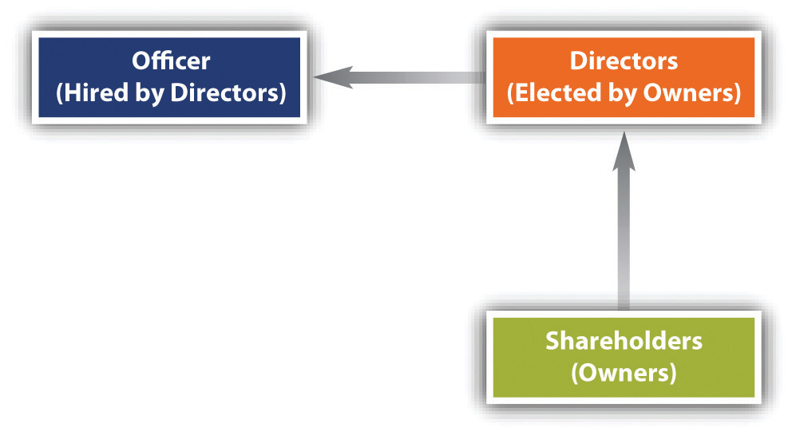

A great society is a society in which [leaders] of business think greatly about their functions.
Alfred North Whitehead
After reading this chapter, you should be able to do the following:
Few subjects are more contentious or important as the role of business in society, particularly, whether corporations have social responsibilities that are distinct from maximizing shareholder value. While the phrase “business ethics” is not oxymoronic (i.e., a contradiction in terms), there is plenty of evidence that businesspeople and firms seek to look out primarily for themselves. However, business organizations ignore the ethical and social expectations of consumers, employees, the media, nongovernment organizations (NGOs), government officials, and socially responsible investors at their peril. Legal compliance alone no longer serves the long-term interests of many companies, who find that sustainable profitability requires thinking about people and the planet as well as profits.
This chapter has a fairly modest aim: to introduce potential businesspeople to the differences between legal compliance and ethical excellence by reviewing some of the philosophical perspectives that apply to business, businesspeople, and the role of business organizations in society.
Most of those who write about ethics do not make a clear distinction between ethics and morality. The question of what is “right” or “morally correct” or “ethically correct” or “morally desirable” in any situation is variously phrased, but all of the words and phrases are after the same thing: what act is “better” in a moral or ethical sense than some other act? People sometimes speak of morality as something personal but view ethics as having wider social implications. Others see morality as the subject of a field of study, that field being ethics. Ethics would be morality as applied to any number of subjects, including journalistic ethics, business ethics, or the ethics of professionals such as doctors, attorneys, and accountants. We will venture a definition of ethics, but for our purposes, ethics and morality will be used as equivalent terms.
People often speak about the ethics or morality of individuals and also about the morality or ethics of corporations and nations. There are clearly differences in the kind of moral responsibility that we can fairly ascribe to corporations and nations; we tend to see individuals as having a soul, or at least a conscience, but there is no general agreement that nations or corporations have either. Still, our ordinary use of language does point to something significant: if we say that some nations are “evil” and others are “corrupt,” then we make moral judgments about the quality of actions undertaken by the governments or people of that nation. For example, if North Korea is characterized by the US president as part of an “axis of evil,” or if we conclude that WorldCom or Enron acted “unethically” in certain respects, then we are making judgments that their collective actions are morally deficient.
In talking about morality, we often use the word good; but that word can be confusing. If we say that Microsoft is a “good company,” we may be making a statement about the investment potential of Microsoft stock, or their preeminence in the market, or their ability to win lawsuits or appeals or to influence administrative agencies. Less likely, though possibly, we may be making a statement about the civic virtue and corporate social responsibility of Microsoft. In the first set of judgments, we use the word good but mean something other than ethical or moral; only in the second instance are we using the word good in its ethical or moral sense.
A word such as good can embrace ethical or moral values but also nonethical values. If I like Daniel and try to convince you what a “good guy” he is, you may ask all sorts of questions: Is he good-looking? Well-off? Fun to be with? Humorous? Athletic? Smart? I could answer all of those questions with a yes, yet you would still not know any of his moral qualities. But if I said that he was honest, caring, forthright, and diligent, volunteered in local soup kitchens, or tithed to the church, many people would see Daniel as having certain ethical or moral qualities. If I said that he keeps the Golden Rule as well as anyone I know, you could conclude that he is an ethical person. But if I said that he is “always in control” or “always at the top of his game,” you would probably not make inferences or assumptions about his character or ethics.
There are three key points here:
Here is a cautionary note: for individuals, it is far from easy to recognize an ethical problem, have a clear and usable decision-making process to deal it, and then have the moral courage to do what’s right. All of that is even more difficult within a business organization, where corporate employees vary in their motivations, loyalties, commitments, and character. There is no universally accepted way for developing an organization where employees feel valued, respected, and free to openly disagree; where the actions of top management are crystal clear; and where all the employees feel loyal and accountable to one another.
Before talking about how ethics relates to law, we can conclude that ethics is the study of morality—“right” and “wrong”—in the context of everyday life, organizational behaviors, and even how society operates and is governed.
There is a difference between legal compliance and moral excellence. Few would choose a professional service, health care or otherwise, because the provider had a record of perfect legal compliance, or always following the letter of the law. There are many professional ethics codes, primarily because people realize that law prescribes only a minimum of morality and does not provide purpose or goals that can mean excellent service to customers, clients, or patients.
Business ethicists have talked for years about the intersection of law and ethics. Simply put, what is legal is not necessarily ethical. Conversely, what is ethical is not necessarily legal. There are lots of legal maneuvers that are not all that ethical; the well-used phrase “legal loophole” suggests as much.
Here are two propositions about business and ethics. Consider whether they strike you as true or whether you would need to know more in order to make a judgment.
Another reason to think about ethics in connection with law is that the laws themselves are meant to express some moral view. If there are legal prohibitions against cheating the Medicare program, it is because people (legislators or their agents) have collectively decided that cheating Medicare is wrong. If there are legal prohibitions against assisting someone to commit suicide, it is because there has been a group decision that doing so is immoral. Thus the law provides some important cues as to what society regards as right or wrong.
Finally, important policy issues that face society are often resolved through law, but it is important to understand the moral perspectives that underlie public debate—as, for example, in the continuing controversies over stem-cell research, medical use of marijuana, and abortion. Some ethical perspectives focus on rights, some on social utility, some on virtue or character, and some on social justice. People consciously (or, more often, unconsciously) adopt one or more of these perspectives, and even if they completely agree on the facts with an opponent, they will not change their views. Fundamentally, the difference comes down to incompatible moral perspectives, a clash of basic values. These are hot-button issues because society is divided, not so much over facts, but over basic values. Understanding the varied moral perspectives and values in public policy debates is a clarifying benefit in following or participating in these important discussions.
The usual answer is that good ethics is good business. In the long run, businesses that pay attention to ethics as well as law do better; they are viewed more favorably by customers. But this is a difficult claim to measure scientifically, because “the long run” is an indistinct period of time and because there are as yet no generally accepted criteria by which ethical excellence can be measured. In addition, life is still lived in the short run, and there are many occasions when something short of perfect conduct is a lot more profitable.
Some years ago, Royal Dutch/Shell (one of the world’s largest companies) found that it was in deep trouble with the public for its apparent carelessness with the environment and human rights. Consumers were boycotting and investors were getting frightened, so the company took a long, hard look at its ethic of short-term profit maximization. Since then, changes have been made. The CEO told one group of business ethicists that the uproar had taken them by surprise; they thought they had done everything right, but it seemed there was a “ghost in the machine.” That ghost was consumers, NGOs, and the media, all of whom objected to the company’s seeming lack of moral sensitivity.
The market does respond to unethical behavior. In Section 2.4 "Corporations and Corporate Governance", you will read about the Sears Auto Centers case. The loss of goodwill toward Sears Auto Centers was real, even though the total amount of money lost cannot be clearly accounted for. Years later, there are people who will not go near a Sears Auto Center; the customers who lost trust in the company will never return, and many of their children may avoid Sears Auto Centers as well.
The Arthur Andersen story is even more dramatic. A major accounting firm, Andersen worked closely with Enron in hiding its various losses through creative accounting measures. Suspiciously, Andersen’s Houston office also did some shredding around the clock, appearing to cover up what it was doing for Enron. A criminal case based on this shredding resulted in a conviction, later overturned by the Supreme Court. But it was too late. Even before the conviction, many clients had found other accounting firms that were not under suspicion, and the Supreme Court’s reversal came too late to save the company. Even without the conviction, Andersen would have lost significant market share.
The irony of Andersen as a poster child for overly aggressive accounting practices is that the man who founded the firm built it on integrity and straightforward practices. “Think straight, talk straight” was the company’s motto. Andersen established the company’s reputation for integrity over a hundred years ago by refusing to play numbers games for a potentially lucrative client.
Maximizing profits while being legally compliant is not a very inspiring goal for a business. People in an organization need some quality or excellence to strive for. By focusing on pushing the edge of what is legal, by looking for loopholes in the law that would help create short-term financial gain, companies have often learned that in the long term they are not actually satisfying the market, the shareholders, the suppliers, or the community generally.
Legal compliance is not the same as acting ethically. Your reputation, individually or corporately, depends on how others regard your actions. Goodwill is hard to measure or quantify, but it is real nonetheless and can best be protected by acting ethically.
There are several well-respected ways of looking at ethical issues. Some of them have been around for centuries. It is important to know that many who think a lot about business and ethics have deeply held beliefs about which perspective is best. Others would recommend considering ethical problems from a variety of different perspectives. Here, we take a brief look at (1) utilitarianism, (2) deontology, (3) social justice and social contract theory, and (4) virtue theory. We are leaving out some important perspectives, such as general theories of justice and “rights” and feminist thought about ethics and patriarchy.
UtilitarianismThe theory that the “right” moral act is the one that produces the greatest good for society. is a prominent perspective on ethics, one that is well aligned with economics and the free-market outlook that has come to dominate much current thinking about business, management, and economics. Jeremy Bentham is often considered the founder of utilitarianism, though John Stuart Mill (who wrote On Liberty and Utilitarianism) and others promoted it as a guide to what is good. Utilitarianism emphasizes not rules but results. An action (or set of actions) is generally deemed good or right if it maximizes happiness or pleasure throughout society. Originally intended as a guide for legislators charged with seeking the greatest good for society, the utilitarian outlook may also be practiced individually and by corporations.
Bentham believed that the most promising way to obtain agreement on the best policies for a society would be to look at the various policies a legislature could pass and compare the good and bad consequences of each. The right course of action from an ethical point of view would be to choose the policy that would produce the greatest amount of utility, or usefulness. In brief, the utilitarian principle holds that an action is right if and only if the sum of utilities produced by that action is greater than the sum of utilities from any other possible act.
This statement describes “act utilitarianism”—which action among various options will deliver the greatest good to society? “Rule utilitarianism” is a slightly different version; it asks, what rule or principle, if followed regularly, will create the greatest good?
Notice that the emphasis is on finding the best possible results and that the assumption is that we can measure the utilities involved. (This turns out to be more difficult that you might think.) Notice also that “the sum total of utilities” clearly implies that in doing utilitarian analysis, we cannot be satisfied if an act or set of acts provides the greatest utility to us as individuals or to a particular corporation; the test is, instead, whether it provides the greatest utility to society as a whole. Notice that the theory does not tell us what kinds of utilities may be better than others or how much better a good today is compared with a good a year from today.
Whatever its difficulties, utilitarian thinking is alive and well in US law and business. It is found in such diverse places as cost-benefit analysis in administrative and regulatory rules and calculations, environmental impact studies, the majority vote, product comparisons for consumer information, marketing studies, tax laws, and strategic planning. In management, people will often employ a form of utility reasoning by projecting costs and benefits for plan X versus plan Y. But the issue in most of these cost-benefit analyses is usually (1) put exclusively in terms of money and (2) directed to the benefit of the person or organization doing the analysis and not to the benefit of society as a whole.
An individual or a company that consistently uses the test “What’s the greatest good for me or the company?” is not following the utilitarian test of the greatest good overall. Another common failing is to see only one or two options that seem reasonable. The following are some frequent mistakes that people make in applying what they think are utilitarian principles in justifying their chosen course of action:
In contrast to the utilitarian perspective, the deontological view presented in the writings of Immanuel Kant purports that having a moral intent and following the right rules is a better path to ethical conduct than achieving the right results. A deontologist like Kant is likely to believe that ethical action arises from doing one’s duty and that duties are defined by rational thought. Duties, according to Kant, are not specific to particular kinds of human beings but are owed universally to all human beings. Kant therefore uses “universalizing“ as a form of rational thought that assumes the inherent equality of all human beings. It considers all humans as equal, not in the physical, social, or economic sense, but equal before God, whether they are male, female, Pygmy, Eskimoan, Islamic, Christian, gay, straight, healthy, sick, young, or old.
For Kantian thinkers, this basic principle of equality means that we should be able to universalize any particular law or action to determine whether it is ethical. For example, if you were to consider misrepresenting yourself on a resume for a particular job you really wanted and you were convinced that doing so would get you that job, you might be very tempted to do so. (What harm would it be? you might ask yourself. When I have the job, I can prove that I was perfect for it, and no one is hurt, while both the employer and I are clearly better off as a result!) Kantian ethicists would answer that your chosen course of action should be a universal one—a course of action that would be good for all persons at all times. There are two requirements for a rule of action to be universal: consistency and reversibility. Consider reversibility: if you make a decision as though you didn’t know what role or position you would have after the decision, you would more likely make an impartial one—you would more likely choose a course of action that would be most fair to all concerned, not just you. Again, deontologyA theory that judges the morality of choices not by results (or “goods”) but by adherence to moral norms. The duty to act in accord with these norms is one that bears no relation to the expected consequences of the action. requires that we put duty first, act rationally, and give moral weight to the inherent equality of all human beings.
In considering whether to lie on your resume, reversibility requires you to actively imagine both that you were the employer in this situation and that you were another well-qualified applicant who lost the job because someone else padded his resume with false accomplishments. If the consequences of such an exercise of the imagination are not appealing to you, your action is probably not ethical.
The second requirement for an action to be universal is the search for consistency. This is more abstract. A deontologist would say that since you know you are telling a lie, you must be willing to say that lying, as a general, universal phenomenon, is acceptable. But if everyone lied, then there would be no point to lying, since no one would believe anyone. It is only because honesty works well for society as a whole and is generally practiced that lying even becomes possible! That is, lying cannot be universalized, for it depends on the preexistence of honesty.
Similar demonstrations can be made for actions such as polluting, breaking promises, and committing most crimes, including rape, murder, and theft. But these are the easy cases for Kantian thinkers. In the gray areas of life as it is lived, the consistency test is often difficult to apply. If breaking a promise would save a life, then Kantian thought becomes difficult to apply. If some amount of pollution can allow employment and the harm is minimal or distant, Kantian thinking is not all that helpful. Finally, we should note that the well-known Golden Rule, “Do unto others as you would have them do unto you,” emphasizes the easier of the two universalizing requirements: practicing reversibility (“How would I like it if someone did this to me?”).
Social justice theorists worry about “distributive justice”—that is, what is the fair way to distribute goods among a group of people? Marxist thought emphasizes that members of society should be given goods to according to their needs. But this redistribution would require a governing power to decide who gets what and when. Capitalist thought takes a different approach, rejecting any giving that is not voluntary. Certain economists, such as the late Milton Friedman (see the sidebar in Section 2.4 "Corporations and Corporate Governance") also reject the notion that a corporation has a duty to give to unmet needs in society, believing that the government should play that role. Even the most dedicated free-market capitalist will often admit the need for some government and some forms of welfare—Social Security, Medicare, assistance to flood-stricken areas, help for AIDs patients—along with some public goods (such as defense, education, highways, parks, and support of key industries affecting national security).
People who do not see the need for public goodsGoods that are useful to society (parks, education, national defense, highways) that would ordinarily not be produced by private enterprise. Public goods require public revenues (taxes) and political support to be adequately maintained. (including laws, court systems, and the government goods and services just cited) often question why there needs to be a government at all. One response might be, “Without government, there would be no corporations.” Thomas Hobbes believed that people in a “state of nature” would rationally choose to have some form of government. He called this the social contractThe idea that people in a civil society have voluntarily given up some of their freedoms to have ordered liberty with the assistance of a government that will support that liberty. Hobbes and Locke are generally regarded as the preeminent social contract theorists., where people give up certain rights to government in exchange for security and common benefits. In your own lives and in this course, you will see an ongoing balancing act between human desires for freedom and human desires for order; it is an ancient tension. Some commentators also see a kind of social contract between corporations and society; in exchange for perpetual duration and limited liability, the corporation has some corresponding duties toward society. Also, if a corporation is legally a “person,” as the Supreme Court reaffirmed in 2010, then some would argue that if this corporate person commits three felonies, it should be locked up for life and its corporate charter revoked!
Modern social contract theorists, such as Thomas Donaldson and Thomas Dunfee (Ties that Bind, 1999), observe that various communities, not just nations, make rules for the common good. Your college or school is a community, and there are communities within the school (fraternities, sororities, the folks behind the counter at the circulation desk, the people who work together at the university radio station, the sports teams, the faculty, the students generally, the gay and lesbian alliance) that have rules, norms, or standards that people can buy into or not. If not, they can exit from that community, just as we are free (though not without cost) to reject US citizenship and take up residence in another country.
Donaldson and Dunfee’s integrative social contracts theory stresses the importance of studying the rules of smaller communities along with the larger social contracts made in states (such as Colorado or California) and nation-states (such as the United States or Germany). Our Constitution can be seen as a fundamental social contract.
It is important to realize that a social contract can be changed by the participants in a community, just as the US Constitution can be amended. Social contract theory is thus dynamic—it allows for structural and organic changes. Ideally, the social contract struck by citizens and the government allows for certain fundamental rights such as those we enjoy in the United States, but it need not. People can give up freedom-oriented rights (such as the right of free speech or the right to be free of unreasonable searches and seizures) to secure order (freedom from fear, freedom from terrorism). For example, many citizens in Russia now miss the days when the Kremlin was all powerful; there was less crime and more equality and predictability to life in the Soviet Union, even if there was less freedom.
Thus the rights that people have—in positive law—come from whatever social contract exists in the society. This view differs from that of the deontologists and that of the natural-law thinkers such as Gandhi, Jesus, or Martin Luther King Jr., who believed that rights come from God or, in less religious terms, from some transcendent moral order.
Another important movement in ethics and society is the communitarian outlook. Communitarians emphasize that rights carry with them corresponding duties; that is, there cannot be a right without a duty. Interested students may wish to explore the work of Amitai Etzioni. Etzioni was a founder of the Communitarian Network, which is a group of individuals who have come together to bolster the moral, social, and political environment. It claims to be nonsectarian, nonpartisan, and international in scope.
The relationship between rights and duties—in both law and ethics—calls for some explanations:
A distinction between basic rights and nonbasic rights may also be important. Basic rights may include such fundamental elements as food, water, shelter, and physical safety. Another distinction is between positive rights (the right to bear arms, the right to vote, the right of privacy) and negative rights (the right to be free from unreasonable searches and seizures, the right to be free of cruel or unusual punishments). Yet another is between economic or social rights (adequate food, work, and environment) and political or civic rights (the right to vote, the right to equal protection of the laws, the right to due process).
Virtue theoryAristotle’s perspective on finding happiness through the application of reason in human affairs advises continual practice to develop habits of virtuous moral character. In a modern setting, deliberating on core values and their application to individual and corporate ethical dilemmas and adhering to the recommendations of core values analysis would provide similar practice., or virtue ethics, has received increasing attention over the past twenty years, particularly in contrast to utilitarian and deontological approaches to ethics. Virtue theory emphasizes the value of virtuous qualities rather than formal rules or useful results. Aristotle is often recognized as the first philosopher to advocate the ethical value of certain qualities, or virtues, in a person’s character. As LaRue Hosmer has noted, Aristotle saw the goal of human existence as the active, rational search for excellence, and excellence requires the personal virtues of honesty, truthfulness, courage, temperance, generosity, and high-mindedness. This pursuit is also termed “knowledge of the good” in Greek philosophy.LaRue Tone Hosmer, Moral Leadership in Business (Chicago: Irwin Professional Publishing, 1994), 72.
Aristotle believed that all activity was aimed at some goal or perceived good and that there must be some ranking that we do among those goals or goods. Happiness may be our ultimate goal, but what does that mean, exactly? Aristotle rejected wealth, pleasure, and fame and embraced reason as the distinguishing feature of humans, as opposed to other species. And since a human is a reasoning animal, happiness must be associated with reason. Thus happiness is living according to the active (rather than passive) use of reason. The use of reason leads to excellence, and so happiness can be defined as the active, rational pursuit of personal excellence, or virtue.
Aristotle named fourteen virtues: (1) courage, particularly in battle; (2) temperance, or moderation in eating and drinking; (3) liberality, or spending money well; (4) magnificence, or living well; (5) pride, or taking pleasure in accomplishments and stature; (6) high-mindedness, or concern with the noble rather than the petty; (7) unnamed virtue, which is halfway between ambition and total lack of effort; (8) gentleness, or concern for others; (9) truthfulness; (10) wit, or pleasure in group discussions; (11) friendliness, or pleasure in personal conduct; (12) modesty, or pleasure in personal conduct; (13) righteous indignation, or getting angry at the right things and in the right amounts; and (14) justice.
From a modern perspective, some of these virtues seem old-fashioned or even odd. Magnificence, for example, is not something we commonly speak of. Three issues emerge: (1) How do we know what a virtue is these days? (2) How useful is a list of agreed-upon virtues anyway? (3) What do virtues have to do with companies, particularly large ones where various groups and individuals may have little or no contact with other parts of the organization?
As to the third question, whether corporations can “have” virtues or values is a matter of lively debate. A corporation is obviously not the same as an individual. But there seems to be growing agreement that organizations do differ in their practices and that these practices are value driven. If all a company cares about is the bottom line, other values will diminish or disappear. Quite a few books have been written in the past twenty years that emphasize the need for businesses to define their values in order to be competitive in today’s global economy.James O’Toole and Don Mayer, eds., Good Business: Exercising Effective and Ethical Leadership (London: Routledge, 2010).
As to the first two questions regarding virtues, a look at Michael Josephson’s core values may prove helpful.
Michael Josephson, a noted American ethicist, believes that a current set of core values has been identified and that the values can be meaningfully applied to a variety of personal and corporate decisions.
To simplify, let’s say that there are ethical and nonethical qualities among people in the United States. When you ask people what kinds of qualities they admire in others or in themselves, they may say wealth, power, fitness, sense of humor, good looks, intelligence, musical ability, or some other quality. They may also value honesty, caring, fairness, courage, perseverance, diligence, trustworthiness, or integrity. The qualities on the second list have something in common—they are distinctively ethical characteristics. That is, they are commonly seen as moral or ethical qualities, unlike the qualities on the first list. You can be, like the Athenian Alcibiades, brilliant but unprincipled, or, like some political leaders today, powerful but dishonest, or wealthy but uncaring. You can, in short, have a number of admirable qualities (brilliance, power, wealth) that are not per se virtuous. Just because Harold is rich or good-looking or has a good sense of humor does not mean that he is ethical. But if Harold is honest and caring (whether he is rich or poor, humorous or humorless), people are likely to see him as ethical.
Among the virtues, are any especially important? Studies from the Josephson Institute of Ethics in Marina del Rey, California, have identified six core valuesValues that are generally recognized as positive ethical characteristics of an individual or a business organization. People may have strong views about other kinds of ethical values, but core values are more widely accepted. in our society, values that almost everyone agrees are important to them. When asked what values people hold dear, what values they wish to be known by, and what values they wish others would exhibit in their actions, six values consistently turn up: (1) trustworthiness, (2) respect, (3) responsibility, (4) fairness, (5) caring, and (6) citizenship.
Note that these values are distinctly ethical. While many of us may value wealth, good looks, and intelligence, having wealth, good looks, and intelligence does not automatically make us virtuous in our character and habits. But being more trustworthy (by being honest and by keeping promises) does make us more virtuous, as does staying true to the other five core values.
Notice also that these six core values share something in common with other ethical values that are less universally agreed upon. Many values taught in the family or in places of worship are not generally agreed on, practiced, or admired by all. Some families and individuals believe strongly in the virtue of saving money or in abstaining from alcohol or sex prior to marriage. Others clearly do not, or at least don’t act on their beliefs. Moreover, it is possible to have and practice core ethical values even if you take on heavy debt, knock down several drinks a night, or have frequent premarital sex. Some would dispute this, saying that you can’t really lead a virtuous life if you get into debt, drink heavily, or engage in premarital sex. But the point here is that since people do disagree in these areas, the ethical traits of thrift, temperance, and sexual abstinence do not have the unanimity of approval that the six core values do.
The importance of an individual’s having these consistent qualities of character is well known. Often we remember the last bad thing a person did far more than any or all previous good acts. For example, Eliot Spitzer and Bill Clinton are more readily remembered by people for their last, worst acts than for any good they accomplished as public servants. As for a company, its good reputation also has an incalculable value that when lost takes a great deal of time and work to recover. Shell, Nike, and other companies have discovered that there is a market for morality, however difficult to measure, and that not paying attention to business ethics often comes at a serious price. In the past fifteen years, the career of ethics and compliance officer has emerged, partly as a result of criminal proceedings against companies but also because major companies have found that reputations cannot be recovered retroactively but must be pursued proactively. For individuals, Aristotle emphasized the practice of virtue to the point where virtue becomes a habit. Companies are gradually learning the same lesson.
Throughout history, people have pondered what it means “to do what is right.” Some of the main answers have come from the differing perspectives of utilitarian thought; duty-based, or deontological, thought; social contract theory; and virtue ethics.
XYZ Motor Corporation begins to get customer complaints about two models of its automobiles. Customers have had near-death experiences from sudden acceleration; they would be driving along a highway at normal speed when suddenly the car would begin to accelerate, and efforts to stop the acceleration by braking fail to work. Drivers could turn off the ignition and come to a safe stop, but XYZ does not instruct buyers of its cars to do so, nor is this a common reaction among drivers who experience sudden acceleration.
Internal investigations of half a dozen accidents in US locations come to the conclusion that the accidents are not being caused by drivers who mistake the gas pedal for the brake pedal. In fact, there appears to be a possible flaw in both models, perhaps in a semiconductor chip, that makes sudden acceleration happen. Interference by floor mats and poorly designed gas pedals do not seem to be the problem.
It is voluntary to report these incidents to the National Highway Traffic and Safety Administration (NHTSA), but the company decides that it will wait awhile and see if there are more complaints. Recalling the two models so that local dealers and their mechanics could examine them is also an option, but it would be extremely costly. Company executives are aware that quarterly and annual profit-and-loss statements, on which their bonuses depend, could be decisively worse with a recall. They decide that on a cost-benefit basis, it makes more sense to wait until there are more accidents and more data. After a hundred or more accidents and nearly fifteen fatalities, the company institutes a selective recall, still not notifying NHTSA, which has its own experts and the authority to order XYZ to do a full recall of all affected models.
Experts have advised XYZ that standard failure-analysis methodology requires that the company obtain absolutely every XYZ vehicle that has experienced sudden acceleration, using microscopic analysis of all critical components of the electronic system. The company does not wish to take that advice, as it would be—as one top executive put it—“too time-consuming and expensive.”
Once you recognize that there is a decision that involves ethical judgment, Michael Josephson would first have you ask as many questions as are necessary to get a full background on the relevant facts. Then, assuming you have all the needed information, the decision process is as follows:
It is often helpful to identify who (or what group) is the most important stakeholder, and why. In Milton Friedman’s view, it will always be the shareholders. In the view of John Mackey, the CEO of Whole Foods Market, the long-term viability and profitability of the organization may require that customers come first, or, at times, some other stakeholder group (see “Conscious Capitalism” in Section 2.4 "Corporations and Corporate Governance").
Here are the core values and their subcomponents as developed by the Josephson Institute of Ethics.
Trustworthiness: Be honest—tell the truth, the whole truth, and nothing but the truth; be sincere, forthright; don’t deceive, mislead, or be tricky with the truth; don’t cheat or steal, and don’t betray a trust. Demonstrate integrity—stand up for what you believe, walk the walk as well as talking the talk; be what you seem to be; show commitment and courage. Be loyal—stand by your family, friends, co-workers, community, and nation; be discreet with information that comes into your hands; don’t spread rumors or engage in harmful gossip; don’t violate your principles just to win friendship or approval; don’t ask a friend to do something that is wrong. Keep promises—keep your word, honor your commitments, and pay your debts; return what you borrow.
Respect: Judge people on their merits, not their appearance; be courteous, polite, appreciative, and accepting of differences; respect others’ right to make decisions about their own lives; don’t abuse, demean, mistreat anyone; don’t use, manipulate, exploit, or take advantage of others.
Responsibility: Be accountable—think about the consequences on yourself and others likely to be affected before you act; be reliable; perform your duties; take responsibility for the consequences of your choices; set a good example and don’t make excuses or take credit for other people’s work. Pursue excellence: Do your best, don’t quit easily, persevere, be diligent, make all you do worthy of pride. Exercise self-restraint—be disciplined, know the difference between what you have a right to do and what is right to do.
Fairness: Treat all people fairly, be open-minded; listen; consider opposing viewpoints; be consistent; use only appropriate considerations; don’t let personal feelings improperly interfere with decisions; don’t take unfair advantage of mistakes; don’t take more than your fair share.
Caring: Show you care about others through kindness, caring, sharing, compassion, and empathy; treat others the way you want to be treated; don’t be selfish, mean, cruel, or insensitive to others’ feelings.
Citizenship: Play by the rules, obey laws; do your share, respect authority, stay informed, vote, protect your neighbors, pay your taxes; be charitable, help your community; protect the environment, conserve resources.
When individuals and organizations confront ethical problems, the core values decision model offered by Josephson generally works well (1) to clarify the gains and losses of the various stakeholders, which then raises ethical awareness on the part of the decision maker and (2) to provide a fairly reliable guide as to what the most ethical decision would be. In nine out of ten cases, step 5 in the decision process is not needed.
That said, it does not follow that students (or managers) would necessarily act in accord with the results of the core values decision process. There are many psychological pressures and organizational constraints that place limits on people both individually and in organizations. These pressures and constraints tend to compromise ideal or the most ethical solutions for individuals and for organizations. For a business, one essential problem is that ethics can cost the organization money or resources, at least in the short term. Doing the most ethical thing will often appear to be something that fails to maximize profits in the short term or that may seem pointless because if you or your organization acts ethically, others will not, and society will be no better off, anyway.
Having a step-by-step process to analyze difficult moral dilemmas is useful. One such process is offered here, based on the core values of trustworthiness, caring, respect, fairness, responsibility, and citizenship.
Figure 2.1 Corporate Legal Structure
Figure 2.1 "Corporate Legal Structure", though somewhat oversimplified, shows the basic legal structure of a corporation under Delaware law and the laws of most other states in the United States. Shareholders elect directors, who then hire officers to manage the company. From this structure, some very basic realities follow. Because the directors of a corporation do not meet that often, it’s possible for the officers hired (top management, or the “C-suite”) to be selective of what the board knows about, and directors are not always ready and able to provide the oversight that the shareholders would like. Nor does the law require officers to be shareholders, so that officers’ motivations may not align with the best interests of the company. This is the “agency problem” often discussed in corporate governance: how to get officers and other top management to align their own interests with those of the shareholders. For example, a CEO might trade insider information to the detriment of the company’s shareholders. Even board members are susceptible to misalignment of interets; for example, board members might resist hostile takeover bids because they would likely lose their perks (short for perquisites) as directors, even though the tender offer would benefit stockholders. Among other attempted realignments, the use of stock options was an attempt to make managers more attentive to the value of company stock, but the law of unintended consequences was in full force; managers tweaked and managed earnings in the bubble of the 1990s bull market, and “managing by numbers” became an epidemic in corporations organized under US corporate law. The rights of shareholders can be bolstered by changes in state and federal law, and there have been some attempts to do that since the late 1990s. But as owners, shareholders have the ultimate power to replace nonperforming or underperforming directors, which usually results in changes at the C-suite level as well.
There are two main views about what the corporation’s duties are. The first view—maximizing profits—is the prevailing view among business managers and in business schools. This view largely follows the idea of Milton Friedman that the duty of a manager is to maximize return on investment to the owners. In essence, managers’ legally prescribed duties are those that make their employment possible. In terms of the legal organization of the corporation, the shareholders elect directors who hire managers, who have legally prescribed duties toward both directors and shareholders. Those legally prescribed duties are a reflection of the fact that managers are managing other people’s money and have a moral duty to act as a responsible agent for the owners. In law, this is called the manager’s fiduciary duty. Directors have the same duties toward shareholders. Friedman emphasized the primacy of this duty in his writings about corporations and social responsibility.
Economist Milton Friedman is often quoted as having said that the only moral duty a corporation has is to make the most possible money, or to maximize profits, for its stockholders. Friedman’s beliefs are noted at length (see sidebar on Friedman’s article from the New York Times), but he asserted in a now-famous 1970 article that in a free society, “there is one and only one social responsibility of business: to use its resources and engage in activities designed to increase its profits as long as it stays within the rules of the game, which is to say, engages in open and free competition without deception and fraud.” What follows is a major portion of what Friedman had to say in 1970.
Milton Friedman, New York Times Magazine, September 13, 1970
What does it mean to say that “business” has responsibilities? Only people can have responsibilities. A corporation is an artificial person and in this sense may have artificial responsibilities, but “business” as a whole cannot be said to have responsibilities, even in this vague sense.…
Presumably, the individuals who are to be responsible are businessmen, which means individual proprietors or corporate executives.…In a free enterprise, private-property system, a corporate executive is an employee of the owners of the business. He has direct responsibility to his employers. That responsibility is to conduct the business in accordance with their desires, which generally will be to make as much money as possible while conforming to the basic rules of the society, both those embodied in law and those embodied in ethical custom.…
…[T]he manager is that agent of the individuals who own the corporation or establish the eleemosynary institution, and his primary responsibility is to them…
Of course, the corporate executive is also a person in his own right. As a person, he may have other responsibilities that he recognizes or assumes voluntarily—to his family, his conscience, his feeling of charity, his church, his clubs, his city, his country. He may feel impelled by these responsibilities to devote part of his income to causes he regards as worthy, to refuse to work for particular corporations, even to leave his job…But in these respects he is acting as a principal, not an agent; he is spending his own money or time or energy, not the money of his employers or the time or energy he has contracted to devote to their purposes. If these are “social responsibilities,” they are the social responsibilities of individuals, not of business.
What does it mean to say that the corporate executive has a “social responsibility” in his capacity as businessman? If this statement is not pure rhetoric, it must mean that he has to act in some way that is not in the interest of his employers. For example, that he is to refrain from increasing the price of the product in order to contribute to the social objective of preventing inflation, even though a price increase would be in the best interests of the corporation. Or that he is to make expenditures on reducing pollution beyond the amount that is in the best interests of the corporation or that is required by law in order to contribute to the social objective of improving the environment. Or that, at the expense of corporate profits, he is to hire “hardcore” unemployed instead of better qualified available workmen to contribute to the social objective of reducing poverty.
In each of these cases, the corporate executive would be spending someone else’s money for a general social interest. Insofar as his actions…reduce returns to stockholders, he is spending their money. Insofar as his actions raise the price to customers, he is spending the customers’ money. Insofar as his actions lower the wages of some employees, he is spending their money.
This process raises political questions on two levels: principle and consequences. On the level of political principle, the imposition of taxes and the expenditure of tax proceeds are governmental functions. We have established elaborate constitutional, parliamentary, and judicial provisions to control these functions, to assure that taxes are imposed so far as possible in accordance with the preferences and desires of the public.…
Others have challenged the notion that corporate managers have no real duties except toward the owners (shareholders). By changing two letters in shareholder, stakeholder theorists widened the range of people and institutions that a corporation should pay moral consideration to. Thus they contend that a corporation, through its management, has a set of responsibilities toward nonshareholder interests.
Stakeholders of a corporation include its employees, suppliers, customers, and the community. Stakeholder is a deliberate play on the word shareholder, to emphasize that corporations have obligations that extend beyond the bottom-line aim of maximizing profits. A stakeholder is anyone who most would agree is significantly affected (positively or negatively) by the decision of another moral agent.
There is one vital fact about corporations: the corporation is a creation of the law. Without law (and government), corporations would not have existence. The key concept for corporations is the legal fact of limited liability. The benefit of limited liability for shareholders of a corporation meant that larger pools of capital could be aggregated for larger enterprises; shareholders could only lose their investments should the venture fail in any way, and there would be no personal liability and thus no potential loss of personal assets other than the value of the corporate stock. Before New Jersey and Delaware competed to make incorporation as easy as possible and beneficial to the incorporators and founders, those who wanted the benefits of incorporation had to go to legislatures—usually among the states—to show a public purpose that the company would serve.
In the late 1800s, New Jersey and Delaware changed their laws to make incorporating relatively easy. These two states allowed incorporation “for any legal purpose,” rather than requiring some public purpose. Thus it is government (and its laws) that makes limited liability happen through the corporate form. That is, only through the consent of the state and armed with the charter granted by the state can a corporation’s shareholders have limited liability. This is a right granted by the state, a right granted for good and practical reasons for encouraging capital and innovation. But with this right comes a related duty, not clearly stated at law, but assumed when a charter is granted by the state: that the corporate form of doing business is legal because the government feels that it socially useful to do so.
Implicitly, then, there is a social contract between governments and corporations: as long as corporations are considered socially useful, they can exist. But do they have explicit social responsibilities? Milton Friedman’s position suggests that having gone along with legal duties, the corporation can ignore any other social obligations. But there are others (such as advocates of stakeholder theoryThe view that all stakeholders to a corporate decision deserve some kind of moral consideration and that corporations that keep all stakeholders in mind will, over the long term, deliver superior results to shareholders.) who would say that a corporation’s social responsibilities go beyond just staying within the law and go beyond the corporation’s shareholders to include a number of other important stakeholders, those whose lives can be affected by corporate decisions.
According to stakeholder theorists, corporations (and other business organizations) must pay attention not only to the bottom line but also to their overall effect on the community. Public perception of a company’s unfairness, uncaring, disrespect, or lack of trustworthiness often leads to long-term failure, whatever the short-term successes or profits may be. A socially responsible corporation is likely to consider the impact of its decisions on a wide range of stakeholders, not just shareholders. As Table 2.1 "The Stakes of Various Stakeholders" indicates, stakeholders have very different kinds of interests (“stakes”) in the actions of a corporation.
Table 2.1 The Stakes of Various Stakeholders
| Ownership | The value of the organization has a direct impact on the wealth of these stakeholders. | Managers |
| Directors who own stock | ||
| Shareholders | ||
| Economic Dependence | Stakeholders can be economically dependent without having ownership. Each of these stakeholders relies on the corporation in some way for financial well-being. | Salaried managers |
| Creditors | ||
| Suppliers | ||
| Employees | ||
| Local communities | ||
| Social Interests | These stakeholders are not directly linked to the organization but have an interest in making sure the organization acts in a socially responsible manner. | Communities |
| Government | ||
| Media |
A corporation is a “person” capable of suing, being sued, and having rights and duties in our legal system. (It is a legal or juridical person, not a natural person, according to our Supreme Court.) Moreover, many corporations have distinct cultures and beliefs that are lived and breathed by its members. Often, the culture of a corporation is the best defense against individuals within that firm who may be tempted to break the law or commit serious ethical misdeeds.
What follows is a series of observations about corporations, ethics, and corporate culture.
People in an organization tend to watch closely what the top managers do and say. Regardless of managers’ talk about ethics, employees quickly learn what speech or actions are in fact rewarded. If the CEO is firm about acting ethically, others in the organization will take their cues from him or her. People at the top tend to set the target, the climate, the beliefs, and the expectations that fuel behavior.
Clever managers can learn to shift blame to others, take credit for others’ work, and move on before “funny numbers” or other earnings management tricks come to light.See Robert Jackall, Moral Mazes: The World of Corporate Managers (New York: Oxford University Press, 1988). Again, we see that the manager is often an agent for himself or herself and will often act more in his or her self-interest than for the corporate interest.
Where organizations no longer function, inevitably some employees are unhappy. If they call attention to problems that are being covered up by coworkers or supervisors, they bring bad news. Managers like to hear good news and discourage bad news. Intentionally or not, those who told on others, or blew the whistle, have rocked the boat and become unpopular with those whose defalcations they report on and with the managers who don’t really want to hear the bad news. In many organizations, “killing the messenger” solves the problem. Consider James Alexander at Enron Corporation, who was deliberately shut out after bringing problems to CEO Ken Lay’s attention.John Schwartz, “An Enron Unit Chief Warned, and Was Rebuffed,” New York Times, February 20, 2002. When Sherron Watkins sent Ken Lay a letter warning him about Enron’s accounting practices, CFO Andrew Fastow tried to fire her.Warren Bennis, “A Corporate Fear of Too Much Truth,” New York Times, February 17, 2002.
Without strong leadership and a willingness to listen to bad news as well as good news, managers do not have the feedback necessary to keep the organization healthy. Ethics codes have been put in place—partly in response to federal sentencing guidelines and partly to encourage feedback loops to top management. The best ethics codes are aspirational, or having an ideal to be pursued, not legalistic or compliance driven. The Johnson & Johnson ethics code predated the Tylenol scare and the company’s oft-celebrated corporate response.University of Oklahoma Department of Defense Joint Course in Communication, Case Study: The Johnson & Johnson Tylenol Crisis, accessed April 5, 2011. The corporate response was consistent with that code, which was lived and modeled by the top of the organization.
It’s often noted that a code of ethics is only as important as top management is willing to make it. If the code is just a document that goes into a drawer or onto a shelf, it will not effectively encourage good conduct within the corporation. The same is true of any kind of training that the company undertakes, whether it be in racial sensitivity or sexual harassment. If the message is not continuously reinforced, or (worse yet) if the message is undermined by management’s actions, the real message to employees is that violations of the ethics code will not be taken seriously, or that efforts to stop racial discrimination or sexual harassment are merely token efforts, and that the important things are profits and performance. The ethics code at Enron seems to have been one of those “3-P” codes that wind up sitting on shelves—“Print, Post, and Pray.” Worse, the Enron board twice suspended the code in 1999 to allow outside partnerships to be led by a top Enron executive who stood to gain financially from them.FindLaw, Report of Investigation by the Special Investigative Committee of the Board of Directors of Enron Corp., February 1, 2002, accessed April 5, 2011, http://news.findlaw.com/wsj/docs/enron/sicreport.
The federal sentencing guidelines were enacted in 1991. The original idea behind these guidelines was for Congress to correct the lenient treatment often given to white-collar, or corporate, criminals. The guidelines require judges to consider “aggravating and mitigating” factors in determining sentences and fines. (While corporations cannot go to jail, its officers and managers certainly can, and the corporation itself can be fined. Many companies will claim that it is one bad apple that has caused the problem; the guidelines invite these companies to show that they are in fact tending their orchard well. They can show this by providing evidence that they have (1) a viable, active code of ethics; (2) a way for employees to report violations of law or the ethics code; and (3) an ethics ombudsman, or someone who oversees the code.
In short, if a company can show that it has an ongoing process to root out wrongdoing at all levels of the company, the judge is allowed to consider this as a major mitigating factor in the fines the company will pay. Most Fortune 500 companies have ethics hotlines and processes in place to find legal and ethical problems within the company.
If you manage by the numbers, there is a temptation to lie about those numbers, based on the need to get stock price ever higher. At Enron, “15 percent a year or better earnings growth” was the mantra. Jeffrey Pfeffer, professor of organizational behavior at Stanford University, observes how the belief that “stock price is all that matters” has been hardwired into the corporate psyche. It dictates not only how people judge the worth of their company but also how they feel about themselves and the work that they are doing. And, over time, it has clouded judgments about what is acceptable corporate behavior.Steven Pearlstein, “Debating the Enron Effect,” Washington Post, February 17, 2002.
If winning is the most important thing in your life, then you must be prepared to do anything to win.
—Michael Josephson
Most people want to be winners or associate with winners. As humans, our desire to associate with those who have status provides plenty of incentive to glorify winners and ignore losers. But if an individual, a team, or a company does whatever it takes to win, then all other values are thrown out in the goal to win at all costs. The desire of some people within Sears & Roebuck Company’s auto repair division to win by gaining higher profits resulted in the situation portrayed here.
Sears Roebuck & Company has been a fixture in American retailing throughout the twentieth century. At one time, people in rural America could order virtually anything (including a house) from Sears. Not without some accuracy, the company billed itself as “the place where Americans shop.” But in 1992, Sears was charged by California authorities with gross and deliberate fraud in many of its auto centers.
The authorities were alerted by a 50 percent increase in consumer complaints over a three-year period. New Jersey’s division of consumer affairs also investigated Sears Auto Centers and found that all six visited by investigators had recommended unnecessary repairs. California’s department of consumer affairs found that Sears had systematically overcharged by an average of $223 for repairs and routinely billed for work that was not done. Sears Auto Centers were the largest providers of auto repair services in the state.
The scam was a variant on the old bait-and-switch routine. Customers received coupons in the mail inviting them to take advantage of hefty discounts on brake jobs. When customers came in to redeem their coupons, sales staffers would convince them to authorize additional repairs. As a management tool, Sears had also established quotas for each of their sales representatives to meet.
Ultimately, California got Sears to settle a large number of lawsuits against it by threatening to revoke Sears’ auto repair license. Sears agreed to distribute $50 coupons to nearly a million customers nationwide who had obtained certain services between August 1, 1990, and January 31, 1992. Sears also agreed to pay $3.5 million to cover the costs of various government investigations and to contribute $1.5 million annually to conduct auto mechanic training programs. It also agreed to abandon its repair service quotas. The entire settlement cost Sears $30 million. Sears Auto Center sales also dropped about 15 to 20 percent after news of the scandal broke.
Note that in boosting sales by performing unnecessary services, Sears suffered very bad publicity. Losses were incalculable. The short-term gains were easy to measure; long-term consequences seldom are. The case illustrates a number of important lessons:
Noting this last point, we can assume that these key people were motivated by maximizing profits and had lost sight of other goals for the organization.
The emphasis on doing whatever is necessary to win is entirely understandable, but it is not ethical. The temptation will always exist—for individuals, companies, and nations—to dominate or to win and to write the history of their actions in a way that justifies or overlooks the harm that has been done. In a way, this fits with the notion that “might makes right,” or that power is the ultimate measure of right and wrong.
One effort to integrate the two viewpoints of stakeholder theory and shareholder primacy is the conscious capitalism movement. Companies that practice conscious capitalismCompanies that practice conscious capitalism embrace the idea that profit and prosperity can and must go hand in hand with social justice and environmental stewardship. embrace the idea that profit and prosperity can and must go hand in hand with social justice and environmental stewardship. They operate with a holistic or systems view. This means that they understand that all stakeholders are connected and interdependent. They reject false trade-offs between stakeholder interests and strive for creative ways to achieve win-win-win outcomes for all.Milton Friedman, John Mackey, and T. J. Rodgers, “Rethinking the Social Responsibility of Business,” Reason.com, October 2005, http://reason.com/archives/2005/10/01/rethinking-the-social-responsi.
The “conscious business” has a purpose that goes beyond maximizing profits. It is designed to maximize profits but is focused more on its higher purpose and does not fixate solely on the bottom line. To do so, it focuses on delivering value to all its stakeholders, harmonizing as best it can the interests of consumers, partners, investors, the community, and the environment. This requires that company managers take a “servant leadership” role, serving as stewards to the company’s deeper purpose and to the company’s stakeholders.
Conscious business leaders serve as such stewards, focusing on fulfilling the company’s purpose, delivering value to its stakeholders, and facilitating a harmony of interests, rather than on personal gain and self-aggrandizement. Why is this refocusing needed? Within the standard profit-maximizing model, corporations have long had to deal with the “agency problem.” Actions by top-level managers—acting on behalf of the company—should align with the shareholders, but in a culture all about winning and money, managers sometimes act in ways that are self-aggrandizing and that do not serve the interests of shareholders. Laws exist to limit such self-aggrandizing, but the remedies are often too little and too late and often catch only the most egregious overreaching. Having a culture of servant leadership is a much better way to see that a company’s top management works to ensure a harmony of interests.
Doing good business requires attention to ethics as well as law. Understanding the long-standing perspectives on ethics—utilitarianism, deontology, social contract, and virtue ethics—is helpful in sorting out the ethical issues that face us as individuals and businesses. Each business needs to create or maintain a culture of ethical excellence, where there is ongoing dialogue not only about the best technical practices but also about the company’s ethical challenges and practices. A firm that has purpose and passion beyond profitability is best poised to meet the needs of diverse stakeholders and can best position itself for long-term, sustainable success for shareholders and other stakeholders as well.
Consider again Milton Friedman’s article.
Consider again the Harris v. Forklift case at the end of Chapter 1 "Introduction to Law and Legal Systems". The Supreme Court ruled that Ms. Harris was entitled to be heard again by the federal district court, which means that there would be a trial on her claim that Mr. Hardy, owner of Forklift Systems, had created a “hostile working environment” for Ms. Harris. Apart from the legal aspects, did he really do anything unethical? How can you tell?
Assume that the year is 1963, prior to the passage of the Civil Rights Act of 1964 and the Title VII provisions regarding equal employment opportunity that prohibit discrimination based on sex. So, Mr. Hardy’s actions are not illegal, fraudulent, or deceitful. Assume also that he heads a large public company and that there is a large amount of turnover and unhappiness among the women who work for the company. No one can sue him for being sexist or lecherous, but are his actions consistent with maximizing shareholder returns? Should the board be concerned?
Notice that this question is really a stand-in for any situation faced by a company today regarding its CEO where the actions are not illegal but are ethically questionable. What would conscious capitalism tell a CEO or a board to do where some group of its employees are regularly harassed or disadvantaged by top management?
Milton Friedman would have been most likely to agree to which of the following statements?
Milton Friedman meant (using the material quoted in this chapter) that companies should
What are some key drawbacks to utilitarian thinking at the corporate level?
Which ethical perspective would allow that under certain circumstances, it might be ethical to lie to a liar?
Under conscious capitalism,